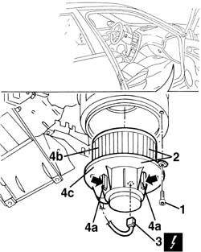
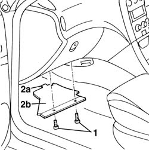
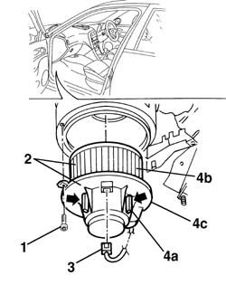

5020A30 heater fan motor - r+r
- Path
- Procedures > 50 AUXILIARY UNITS > 5020 HEATER > 5020A box and components > 5020A30 heater fan motor - r+r
- Kind
- repair procedure (removal / refitting; the operation number is the code)
- Applies to
- all engines; all production periods
- Interactive page
- https://sloeber94.github.io/elrnDB-a156/en/#/3238281
Applies to: all engines; all production periods
 Removing
Removing
 Refitting
Refitting1. Working under the scaffold loosen the screws
2. Turn the support in the anticlockwise direction and remove it a little
3. Disconnect the electric connection
 | Name | Connector |
|---|---|---|
3 | Passenger compartment ventilation fan |
4. If necessary press the vibration-dumping rubbers (4a) and separate the electroventilator (4b) from the support (4c).

Applies to: all engines; all production periods
Refitting
RemovingVerify that the elctroventilator has no damages and, if necessary, verify its functionality
When disassembled, insert in its seat the electroventilator, by pressing the vibration-damping rubbers
Connect the electric connection
Install in its seat the whole support - electroventilator and turn it in the clockwise direction
Tighten the screw
Verify the functionality of the electroventilator at every speed
Applies to: all engines; all production periods; only with equipment: Right hand drive and Heater
Removing
Refitting1. Working under the dashboard, undo the bolts.
2. Disengage the retainers (2a) and remove the fan sound-proofing panel (2b).

Applies to: all engines; all production periods; only with equipment: Right hand drive and Heater
1. Working under the dashboard, undo the bolt.
2. Rotate the support in an anti-clockwise direction and gently extract it.
3. Disconnect the electrical connection.
| Name | Connector |
|---|---|---|
3 | Passenger compartment ventilation fan |
4. If necessary, press the anti-vibration rubber mountings (4a) and separate the fan (4b) from the support (4c).

Applies to: all engines; all production periods; only with equipment: Right hand drive and Heater
Refitting
RemovingCheck that the fan is not damaged and, if necessary, test it.
If removed, insert the fan in its housing ensuring that the rubber anti-vibration mountings are fitted.
Connect the electrical connection.
Insert the support - fan assembly in the housing and rotate it in a clockwise direction.
Tighten the bolt.
Fit the fan soundproofing panel and secure it using the bolts.
Test the operation of the fan at the various speeds.